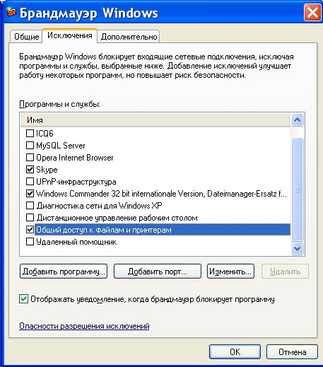

Локальная сеть между Ubuntu Linux и Windows
В этой статье будет рассмотрен простейший случай локальной сети - одноранговая полностью доверенная сеть. Или, если проще выражаться, соединены несколько равноценных компьютеров и доступ разрешен всем ко всем. Именно такие простые сети наиболее актуальны. В наибольшей степени такие гетерогенные (Windows - Linux) сети интересны для маленьких и небольших компаний, которые все более активно переходят на использование ОС GNU/Linux.
В этой статье не будет рассмотрен аппаратный аспект такой сети поскольку нет ничего сложного в том, чтобы при помощи свитча и кабелей соединить компьютеры между собой. В дальнейшем подразумевается, что на физическом уровне сеть установлена и функционирует правильно, то есть будет описана лишь программная настройка сети.
Первое, что нужно сделать это выбрать каким образом компьютерам в сети будут присваиваться IP-адреса. Есть два способа, у каждого из которых есть достоинства и недостатки.
Динамическое присвоение адресов
Достоинства:
Недостаток в том, что нужно будет на одном из компьютеров устанавливать DHCP сервер, либо использовать устройство типа роутера со встроенным DHCP сервером. При этом сеть на компьютерах будет недоступна, если этот компьютер или роутер будет выключен или выйдет из строя.
Статическое присвоение адресов
В этом случае IP-адреса на каждом компьютере указываются вручную. Достоинства:
Недостаток в том, что нужно будет помнить какие адреса уже используются в сети, чтобы при включении нового компьютера не дать ему уже используемый адрес. Впрочем в небольшой сети не трудно посмотреть адрес на каждом компьютере.
Лично я сторонник статических адресов в тех сетях где состав сети небольшой (до 7-8 компьютеров) и при этом если в эту сеть не добавляются постоянно новые компьютеры (например ноутбуки). Далее в этой статье будет подразумеваться именно статический способ присвоения IP-адресов.
Настройка сетевых интерфейсов
Windows
В операционных системах Windows эти настройки делаются через апплет свойств сетевого подключения, а доступные сетевые подключения перечислены в "Панель управления - Сетевые подключения". Вот так этот апплет выглядит в Windows XP:
Примечание. В Windows 7, 8 и 10 апплет "Сетевые подключения" расположен в "Центр управления сетями - Изменение параметров адаптера". Или есть более короткий путь - через диалоговое окно "Выполнить", в нем нужно написать имя файла ncpa.cpl.
Кроме этого сетевому интерфейсу нужно присвоить IP-адрес. Это делается через свойства "Протокол Интернета (TCP/IP)", в следующем апплете:
Общепринято использовать для локальных сетей диапазон адресов 192.168.x.x. Поле "Основной шлюз" нужно заполнять только если этот компьютер получает Интернет с другого компьютера или с модема-роутера и в этом случае там должен быть адрес "раздатчика" Интернет.
Кроме этого, для того, чтобы сеть между компьютерами Windows работала, необходимо включить учетную запись "Гость" на каждом из компьютеров и убедиться в том, что на каждом компьютере:
Имя рабочей группы и компьютера можно узнать, а также изменить через апплет "Система":
Если используется брандмауэр Windows, то нужно разрешить сетевые соединения для доступа к файлам и папкам:

Аналогичное правило должно быть создано в том случае если используется другой файерволл.
Ubuntu Linux
В Ubuntu Linux параметры сетевых интерфейсов можно определить через через апплет "Сеть":
И затем в свойствах сетевого интерфейса:
Настройка доступа к файлам
Windows
В отдельных статьях этот вопрос раскрывается более подробно:
Примечание. В Windows 7, 8 и 10 настройка доступа к файлам выполняется немного иначе чем на Windows XP. Для этих версий Windows есть отдельные статьи, ссылки указаны выше.
Если нужно, чтобы на компьютере с установленной ОС Windows были доступны через сеть какие-то файлы или принтер, необходимо эти файлы или принтер "расшарить" то есть разрешить доступ к ним других пользователей. Это делается через апплет свойств папки или принтера. Вот так этот апплет выглядит в Windows XP:
На вкладке "Безопасность" нужно добавить группу "Все" и дать ей полный доступ к папке. Это нужно для того, чтобы по сети в этой папке можно было создавать и редактировать файлы. Простейший полный и анонимный доступ к папке.
Кроме этого, на вкладке "Доступ" нужно разрешить сетевой доступ к этой папке и указать сетевое имя папки. При указании сетевого имени папки не рекомендую использовать русские буквы, а также пробелы - имя лучше писать латинскими буквами без пробелов:
Ubuntu Linux
В отдельной статье этот вопрос раскрывается более подробно - настройка доступа без пароля на Ubuntu Linux
Общий доступ к папке
Для того, чтобы сделать файлы и папки Ubuntu доступными через сеть на компьютерах с ОС Windows нужно установить полный пакет Samba. Потому что по умолчанию устанавливается только часть этого пакета - SMB Client, которая позволяет только получать доступ к сетевым ресурсам на компьютерах с ОС Windows. Установить этот пакет можно через менеджер пакетов Синаптик, либо этот пакет будет установлен автоматически при попытке "расшарить" первую папку на компьютере с ОС Ubuntu Linux. Но для установки этого пакета потребуется либо установочный DVD диск Ubuntu Linux, либо соединение с Интернет.
Для того, чтобы сделать файлы и папки Ubuntu доступными через сеть нужно в Наутилусе найти нужную папку, затем нажать правую кнопку мыши и затем открыть апплет "Свойства", а на нем вкладку "Общий доступ":
Важно! На эту локальную папку необходимо дать права 777, то есть полный доступ для всех. Сделать это можно либо через файловый менеджер (через свойства папки - вкладка Доступ), либо при помощи консольной программы chmod.
Теперь эта локальная (для Линукс) папка будет доступна по сети.
Дополнительные настройки Самба (Samba)
Samba это программа, которая предоставляет доступ к файловым ресурсам Linux для компьютеров Windows. Таким образом что компьютер Linux в локальной сети выглядит так же как и компьютер Windows. На Ubuntu Samba устанавливается и запускается автоматически, если вы включили общий доступ к какой-либо папке через Наутилус (как это описано выше).
Для того, чтобы обеспечить более удобный доступ к сетевой папке Линукс со стороны Windows, без запросов паролей и проблем доступа, нужно еще дополнительно настроить Самбу. Для этого редактируется файл /etc/samba/smb.conf.
Гостевой полный доступ к сетевой папке на Линукс
Секция [global]
Примечание: параметр map to guest определяет поведение самбы в случае неправильного логина или пароля. В этом случае самба подключит сетевого пользователя под эккаунтом Гость. В этом параметре можно указывать и другое значение - bad user.
Секция [shared resource name]
Примечание: параметры directory mask и create mask "заставляют" самбу давать полные права для всех на те файлы, которые будут созданы в этой папке через сеть. Это необходимо для тог, чтобы обеспечить доступность файлов и папок для всех пользователей локальной сети.
Такие параметры позволят "спокойно" работать с расшаренными на Linux файлами через сеть не мучаясь с авторизацией.
Можно здесь добавить еще два параметра: "force user = username" и "force group = usergroup". В этом случае, для всех созданных по сети файлов и папок будет установлен владелец username и группа владельца usergroup. Значения username и usergroup должны совпадать с именем и группой локального пользователя Линукс.
После расшаривании папки через Наутилус, нужные параметры в секциях [global] записываются автоматически. Но параметры directory mask и create mask нужно добавлять вручную.
Проблемы с доступом на локальной расшаренной папке Linux
После всех этих настроек тем не менее возможна проблема с доступом к некоторым файлам в этой папке через сеть. Такая проблема может возникнуть если локальный пользователь Линукс, локально откроет эту папку и создаст в ней новый файл. Этот файл другие пользователи сети не смогут редактировать. Поскольку права на него будут установлены не такие как все остальные файлы в папке (не 666).
То же самое произойдет если локальный пользователь Линукс скопирует в эту папку файлы из другой папки на компьютере Линукс, либо например с внешнего устройства.
Есть разные способы решения этой проблемы.
Самый технически простой заключается в том, что локальный пользователь Линукс открывал эту папку тоже через сеть. Дело в том, что графические файловые менеджеры (Проводники) позволяют через сетевое окружение открывать не только папки на других компьютерах сети, но и расшаренные папки на своем собственно компьютере!
Если локальный пользователь Линукс откроет свою расшаренную папку через сетевое окружение, то все его операции в папке будут "сетевыми", то есть при создании новых файлов эти файлы получат атрибуты доступа в соответствии с настройками Самба.
Рабочая группа Windows
Если название рабочей группы на компьютерах Windows отличается от "WORKGROUP", тогда нужно изменить значение параметра workgroup в файле /etc/samba/smb.conf. Вместо значения "WORKGROUP" там нужно записать то имя группы, которое используется на компьютерах Windows. По умолчанию для самбы значение параметра workgroup = WORKGROUP.
Как расшарить папку и задать разрешения и права доступа в Linux
Еще одна статья в которой подробно рассмотрен вопрос о том как в Linux настроить разрешения и права доступа для того чтобы расшарить папку для анонимного доступа по локальной сети (доступ без пароля).
Настройка Samba и разрешения Linux для доступа без пароля
Доступ к сетевым принтерам
Windows
Если принтер подключен к компьютеру с ОС Windows, нужно разрешить сетевой доступ к нему. Это делается точно так же как и в случае с файлами, через апплет "Свойства".
Ubuntu Linux
Для того, чтобы получить доступ к сетевому принтеру Windows, нужно воспользоваться апплетом "Печать", который доступен через меню "Система - Администрирование". В этом апплете нужно добавить новый принтер и затем выбрать поиск сетевого принтера Windows:
Поиск такого принтера выполняется нажатием кнопки "Browse".
Сопутствующие статьи: